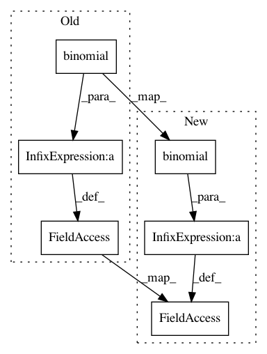

eb8b70c825ef3e02818cbfa95c0f8a9ec4184275,theanolm/layers/dropoutlayer.py,DropoutLayer,create_structure,#DropoutLayer#,34
Before Change
layer_input = self.input_layers[0].output
self.output = tensor.switch(
self.network.is_training,
layer_input * self.network.random.binomial(
layer_input.shape, p=0.5, n=1, dtype=layer_input.dtype),
layer_input * 0.5)
After Change
layer_input = self.input_layers[0].output
// Pass rate is the probability of not dropping a unit.
pass_rate = 1.0 - self.dropout_rate
mask = self.network.random.binomial(
layer_input.shape, p=pass_rate, n=1, dtype=layer_input.dtype)
// Multiply the output by the inverse of the pass rate before dropping
// units to compensate the scaling effect.
scale_correction = 1.0 / pass_rate
self.output = tensor.switch(
self.network.is_training,
layer_input * scale_correction * tensor.cast(mask, theano.config.floatX),
layer_input)
In pattern: SUPERPATTERN
Frequency: 3
Non-data size: 6
Instances
Project Name: senarvi/theanolm
Commit Name: eb8b70c825ef3e02818cbfa95c0f8a9ec4184275
Time: 2015-12-25
Author: seppo.git@marjaniemi.com
File Name: theanolm/layers/dropoutlayer.py
Class Name: DropoutLayer
Method Name: create_structure
Project Name: RaRe-Technologies/gensim
Commit Name: 2c4bba13134a1153cf2bb29408ecb14a833879ff
Time: 2010-04-19
Author: radimrehurek@seznam.cz
File Name: src/gensim/models/rpmodel.py
Class Name: RpModel
Method Name: initialize
Project Name: RaRe-Technologies/gensim
Commit Name: 103ae073e6fcd1df55cf52f46b341046c2467f50
Time: 2010-04-19
Author: piskvorky@92d0401f-a546-4972-9173-107b360ed7e5
File Name: src/gensim/models/rpmodel.py
Class Name: RpModel
Method Name: initialize